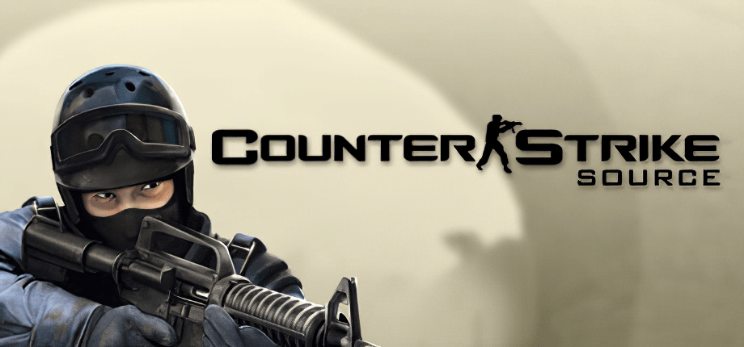
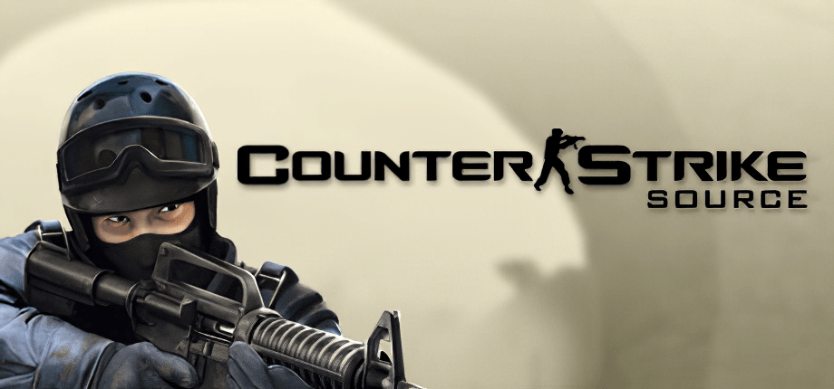

| Home | Maps | Guns | History | Contact |
|---|
 


In 1999 Counter-Strike was released as a mod for Half-Life. As the game progressed from a beta to a full release,
it refined the classic gameplay that has come to define competitive shooters and produced a dedicated community that has followed the game since its first release.
Through each of its iterations – 1.6, Source, and Global Offensive – Counter-Strike has been the de facto benchmark of a player’s first person shooter skill.
Teams from around the world demonstrate their abilities and strategies in local, regional, and international tournaments streamed to millions of viewers across the globe.
Counter-Strike: Global Offensive (CS:GO) expands upon the team-based first person shooter gameplay the original Counter-Strike pioneered when it launched in 1999.
Two teams compete in multiple rounds of objective-based game modes with the goal of winning enough rounds to win the match.
CS:GO features new maps, characters, and weapons and delivers updated versions of the classic Counter-Strike maps like Dust, Inferno, Nuke, Train, and more.
In addition, CS:GO introduces new game modes like Arms Race, Flying Scoutsman and Wingman, and features online matchmaking and Competitive Skill Groups.